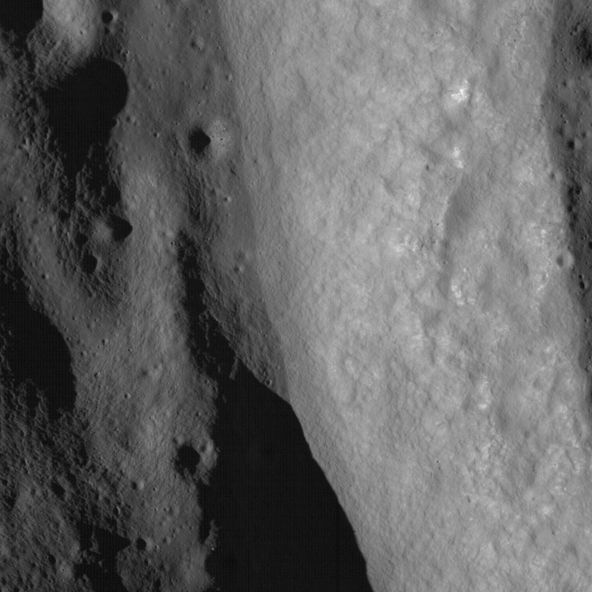
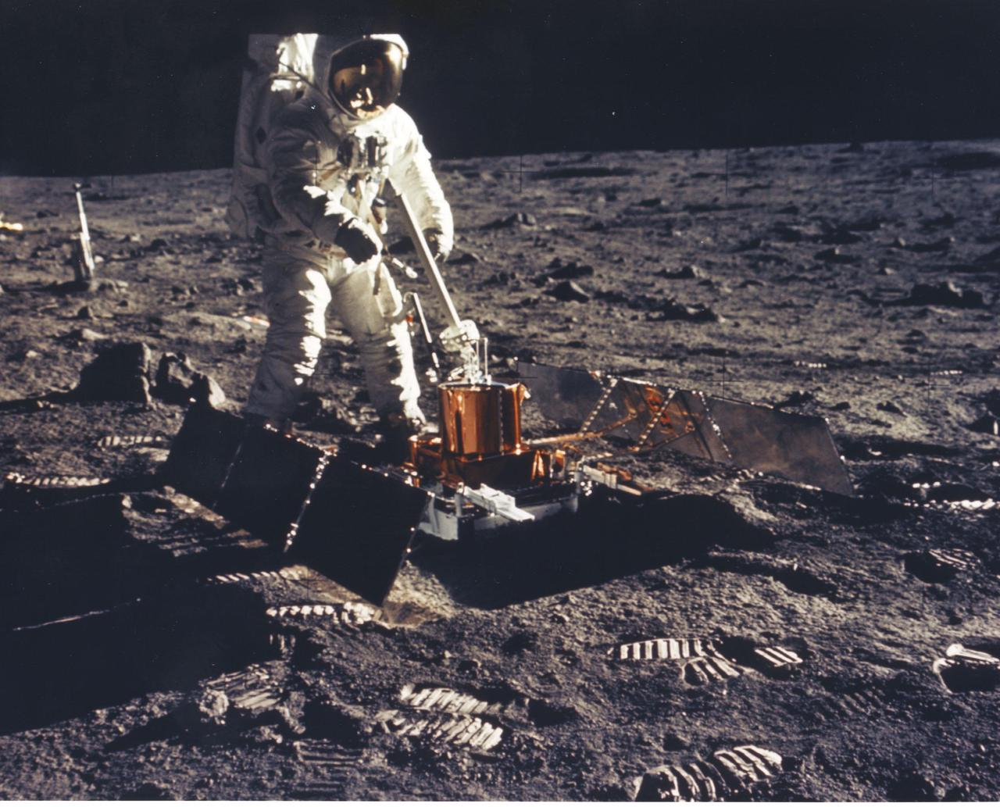

Qué hace difícil alunizar en la Luna, cómo se ve en las misiones reales de la NASA y cómo puedes probar cada fenómeno directamente en el globo 3D de Zenith.
¿Primera vez en Zenith? Haz el recorrido guiado de 2 minutos: resalta cada control real y explica cómo leerlo.
Polo sur lunar y cráter ShackletonNASA/LRO · PIA13523
2.5°BLOQUEADO
Energía · Iluminación
Luz y sombras en el polo sur
La Luna carece de atmósfera para dispersar la luz y su día dura 29,5 días terrestres. En el polo sur el Sol llega casi horizontal (menos de 1,5° sobre el plano): una montaña lejana deja kilómetros enteros en sombra permanente.
Meta de misión: ≥ 6,5 días continuos de Sol desde el aterrizaje.
Ejemplo real: En IM-2 (15 dic 2026), el Sol está a +2,2° pero el relieve lo tapa.
+ Más información técnica (LOLA y DE440)
Zenith compara en cada hora la elevación solar de efemérides JPL DE440 contra el perfil topográfico de 360° de LRO/LOLA:
Índice Energía (0–100): 50 % fracción de horas iluminadas + 50 % continuidad ininterrumpida desde el alunizaje.
La Tierra baja sobre el horizonte lunarNASA · art002e021278
+1.5°SIN ENLACE
Comunicaciones · DTE
Comunicación directa con la Tierra
Sin satélites de relevo, la antena debe ver directamente a la Tierra. En los polos, nuestro planeta permanece pegado al horizonte y oscila ±7° cada ~27 días por la libración lunar.
Cara oculta: Enlace directo = 0 % (requiere satélite relay en órbita).
Ejemplo real: Shackleton Ridge ve la Tierra solo el 35 % de una ventana polar.
+ Más información técnica (Libración y margen)
Para evitar pérdidas por difracción cerca del horizonte, se exige que el centro de la Tierra supere el relieve por al menos 2° por defecto:
En el globo: Celeste ≥ 95 % · Naranja 50–94 % · Bermellón < 50 %.
Operaciones sobre pendiente en Hadley Delta (Apollo 15)NASA · as15-85-11514
6.0°APTO HLS
Terreno · Estabilidad
Topografía y pendiente de alunizaje
Un módulo con centro de gravedad alto puede volcar si toca suelo muy inclinado. Por eso los aterrizadores tripulados (HLS) filtran terreno con pendiente ≤ 8° (meta ideal 5°).
Caso real IM-1 (Odysseus): Posado sobre ~11,8° de pendiente LOLA; se inclinó al aterrizar.
Cobertura LOLA: Relieve medido (120 m/celda) disponible al sur de 80° S.
+ Más información técnica (Gradiente de Horn y rugosidad)
La pendiente local se calcula con el operador 3×3 de Horn sobre la altimetría LOLA, junto a la rugosidad RMS y el despeje de aproximación EDL de 18°:
Cráter reciente con eyecciones y bloques (LROC NAC)NASA/LROC · PIA12893
14°SVF 0.76
Protección · Experimental
Escudo natural contra impactos
Sin atmósfera, los micrometeoritos y eyecciones secundarias impactan a kilómetros por segundo. Estar resguardado por paredes de cráter bloquea trayectorias rasantes, aunque compite con la luz solar.
Balance clave: Más protección = menos cielo abierto = menos Sol y Tierra.
Uso en Zenith: Métrica exploratoria del equipo (peso 0 por defecto).
+ Más información técnica (Sky View Factor · SVF)
Se integra el ángulo sólido del cielo obstruido por el perfil de horizonte LOLA en los 360° de azimut:
Activando su peso en Configuración → Ajustes del puntaje puedes explorar el equilibrio entre energía y resguardo.
Cómo decide la NASA (Proceso CASSA)
La NASA no usa un puntaje único: filtra por seguridad y compara regiones por disponibilidad anual. Zenith automatiza los pasos 3 y 4 en superficie.
PASO 01
Objetivos
Uso de recursos (hielo en PSR), ciencia e infraestructura.
PASO 02
Capacidades
Límites del módulo HLS, trajes, rovers y CLPS.
PASO 03
Pendiente segura
Filtrar terreno ≤ 5°–8° dentro de la elipse.
Cubierto por Zenith
PASO 04
Análisis geoespacial
Iluminación continua y visibilidad DTE.
Cubierto por Zenith
PASO 05
Disponibilidad
Balance final con trayectoria y órbita NRHO.
+ Más información: Umbrales publicados de NASA y fuentes primarias
Luz continua: ≈ 6–6,5 días · Pendiente HLS: 0–8° (meta 5°) · Tierra DTE: ≥ 50 % en estudios preliminares.Fuentes: Lawrence & George 2025 (Artemis IV LSSW), George et al. 2026 (LPSC 1901), NASA Lunar Site Selection White Paper 2024.
Ejemplos guiados: Pruébalo en el Globo
Cada escenario abre la herramienta configurada con fecha, coordenadas y capa de análisis.
MONS MOUTON · 15 DIC 2026
Candidato Artemis III
Observa cómo el relieve polar bloquea parcialmente al Sol y recorta la visibilidad de la Tierra.

IM-1 MALAPERT A · 11,8°
Pendiente al límite
Tiene luz y Tierra, pero supera el límite de 8° en LOLA y queda marcado como NO-GO.

APOLLO 11 · MAR DE LA TRANQUILIDAD
Planicie ecuatorial segura
Tierra siempre visible y luz para toda la estancia. Terreno marca «sin datos» fuera del polo.
COMPARACIÓN · 2 SITIOS
Histórico vs. Artemis
Compara Apollo 11 con Mons Mouton y comprueba si cambia el ganador al mover los pesos.